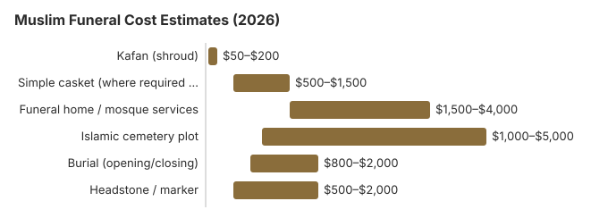

Muslim Funeral Costs: Traditions and Pricing in 2026
Muslim Funeral Requirements and Traditions
Islamic practice calls for ghusl (ritual washing), a plain kafan shroud, the janazah prayer and burial facing Mecca, ideally within a day. Because many communities aim to bury within 24 hours, families often pick a funeral home that already works with the local mosque and can have the washing room and cemetery ready the same day. The steps below are where money is actually spent:
- Burial should take place as soon as possible after death
- The body is ritually washed (ghusl) by same-gender family members or community volunteers
- White cotton shroud (kafan) is used instead of a casket where permitted by local law
- Cremation is not allowed in Islam
- Embalming is generally not permitted unless required by law
- The body is buried facing Mecca (Qibla direction)
- No elaborate casket or vault required by tradition (though local law may require a container)
Our planning range for a Muslim funeral is $3,000 to $8,000. We set that bracket ourselves; it is not an official statistic and not a median from the NFDA 2023 General Price List Study, the most recent one, which NFDA's statistics page still quoted on September 29, 2025. No mosque price survey is cited for the Muslim total. The low end sits near the NFDA immediate-burial medians of $2,995 with a family-supplied container and $3,720 with a funeral-home container, reprinted from the 2023 price list in the 2024 NFDA Cremation and Burial Report. The Muslim table then names a kafan of $50 to $200, a simple casket of $500 to $1,500 only where local law requires one, and an Islamic cemetery plot of $1,000 to $5,000, which is why the Muslim planning range extends to $8,000 without becoming a sum of those rows. We show the same $3,000 to $8,000 range on the religion overview. A family will not buy every row in the table, and the rows overlap, so they do not total to the range; read each as an estimate. Reviewed October 24, 2026.
Muslim Funeral Cost Breakdown
Typical costs for each part of an Islamic burial are set out in the table. Because Islamic practice calls for washing, a simple shroud and prompt burial without embalming, the cemetery and the opening of the grave usually drive the total.
| Item | Typical Cost Range |
|---|---|
| Ghusl preparation | $0 – $300 (often community service) |
| Kafan (shroud) | $50 – $200 |
| Simple casket (where required by law) | $500 – $1,500 |
| Funeral home / mosque services | $1,500 – $4,000 |
| Islamic cemetery plot | $1,000 – $5,000 |
| Imam / officiant | $0 – $500 (often donated) |
| Burial (opening/closing) | $800 – $2,000 |
| Headstone / marker | $500 – $2,000 |

Ways to Save on a Muslim Funeral
For further savings, see our affordable funeral options page and the list of payment assistance programs. Ask each funeral home for its General Price List and compare the transfer, refrigeration and ghusl or washing-room lines.
Trusted Support Resources
- Funeral Consumers AllianceIndependent nonprofit: consumer rights and local affiliates
- FTC Funeral RuleFederal protections for funeral consumers
- Your Consumer Rights GuidePlain-English walkthrough of the FTC Funeral Rule
- Financial Assistance ProgramsGovernment and nonprofit programs that may help
- Grief Support ResourcesCurated grief support organizations and hotlines
Frequently Asked Questions
How much does a Muslim funeral cost?
Most Muslim burials cost $3,000 to $8,000, kept low by the absence of embalming and an elaborate casket, with the cemetery plot as the main variable. Muslim funerals are typically among the least expensive because tradition requires simplicity: no embalming, no elaborate casket, and no extensive cosmetic preparation.
Does the Muslim tradition require burial or cremation?
Islamic funeral traditions emphasize simplicity, speed, and respect for the deceased. Burial should occur as soon as possible, ideally within 24 hours. The requirements section above covers ghusl, the kafan and burial facing the qibla.
How can I save on a Muslim funeral?
Many mosques provide ghusl and kafan services at no cost. Islamic burial societies and community organizations often assist with funeral expenses. The Muslim community tradition of quickly rallying support for bereaved families helps cover costs through collective contributions (sadaqah).
Are there financial assistance programs for Muslim funerals?
Mosques and Islamic funeral committees often help with costs. Many mosques have a funeral committee that can explain washing arrangements, burial plots and any help the community offers with costs. Faith plays no part in eligibility for Social Security's $255 lump-sum death payment, VA burial benefits or state Medicaid-related burial help; our payment assistance guide explains how to apply.
What makes a Muslim funeral different from a secular funeral?
The body is ritually washed (ghusl), wrapped in a white shroud (kafan), and buried facing Mecca. Cremation is not permitted in Islam. The funeral prayer (Salat al-Janazah) is performed by the community.
Disclaimer: Information only, not professional advice. Full disclaimer.